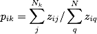
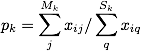
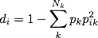
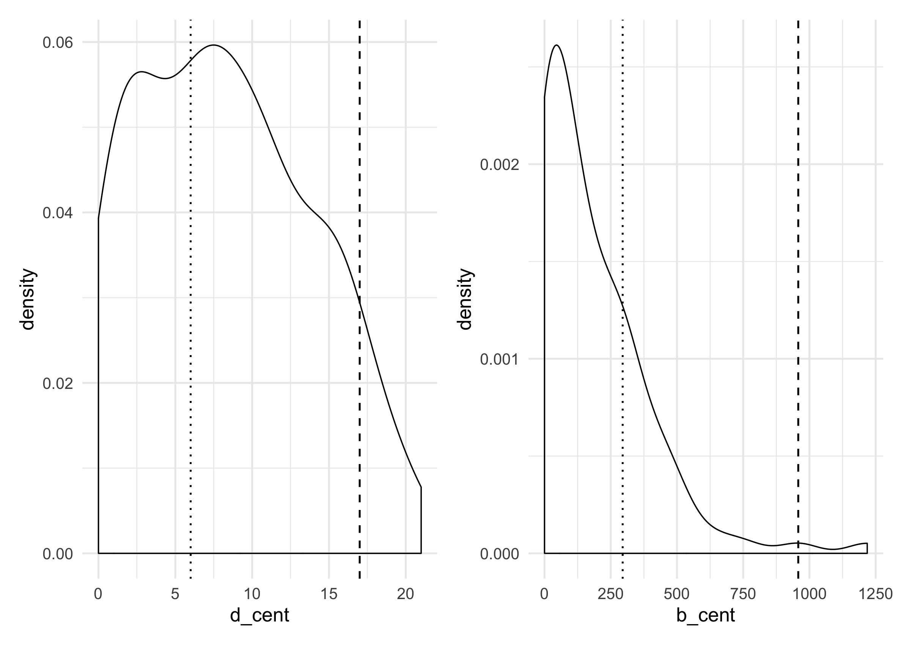

I wrote this up a few years back and updated it to include {ggraph} and {tidygraph}, my go-tos now for network manipulation and visualization.
Some preliminaries
Network range is a measure that I really like. It captures the diversity of an actor's ego network in a nuanced way. But none of the major R network analysis packages includes a node-level measure of range. While range is sometimes used in empirical network studies, it is not nearly as popular as other measures, like centrality or structural holes. Part of the issue is that there are many ways to measure network range. When I refer to network range, I mean Burt's (1983) composite measure of network diversity. The most famous use of this measure is Reagans and McEvily's (2003) study on knowledge transfer and innovation.
The purpose of this vignette is to describe the measure and illustrate its use.
Network Range
This function calculates network range, as described by Burt (1981) and implemented by Reagans and McEvily (2003). Network range is a node-level measure of the diversity of an ego's network connections. It is a function of two features of an ego's network: first, how they distribute their connections across a range of subgroups; and second, how strongly connected those subgroups are. The main idea here is that a person has a wide ranging network if they distribute their connections widely across various subgroups and those subgroups are more loosely connected. It is helpful is this context to think about these subgroups as constituting distinct knowledge pools--for example, departments in a university.
While the first point is pretty intuitive--you can access more diverse information if you are connected to more knowledge pools--the second is a bit less so. The idea is closely related to Ronald Burt's other work. Burt has argued that dense networks result in redundant information. If people within a group have strongly connected to one another, that means they talk to each other a lot. Think of a friendship network. If something interesting happened to one of my close friends, I'm likely to hear the story from them. But I'm also likely to hear the story from another friend who is close to both of us. The information that my friend and I have access to overlap significantly compared to two people who do not know each other well. So, Burt argues, in less dense networks, a greater proportion of the information a person is likely to encounter is novel. There is less redundant information.
So back to range. If I am connected to people in several different departments, I have a very diverse knowledge pool I can draw from. Those knowledge pools are enhanced when they are more loosely connected, since more of the information that I can access is novel.
To measure an actor's network range, it is necessary to calculate the diversity of their ties and the cohesiveness of the knowledge pools they are connected to. We measure the first but taking the sum of the ratio of the sum of the strength of an actor's connection to the distinct subgroups in the network to the sum of the strength of their overall connections (all equations based on Reagans & McEvily, 2003):

where i represents the focal node, j represents their connections within group k, and q represents any of their connections. Nk is the number of connections i has in group k, while N is the total number of connections person i has. The terms zij and ziq captures the strength of the tie between person i and person j and q. To put this plainly, we are summing person i's ties within each distinct group and overall and then finding what proportion of the overall ties is represented by that group. So say that are 6 distinct groups in the network, each i will have 6 scores after this calculation.
To calculate the cohesiveness of each group:

where Mk is the number of nodes within group k and xij is the strength of connections between i and another person in group k. Sk is the total number of connections of nodes in group k and xiq is the strength of connections between person i and any other connection. To put plainly, this finds how strong connections are in group k relative to the overall connections of people in group k.
So now we have the two parts we need to calculate the network diversity of each node in the network:

To find the diversity score of person i, we sum the product of pk, the cohesiveness of group k and the squared of pik--that is, i's strength of connections in group k. This is product is summed over k. Subtracting the summation from one makes the score more sensible, in that higher score indicate greater diversity.
Now that we have all the pieces, we can make this a bit more intuitive. A person's diversity score increases under two conditions: first, to the extent that the spread their connections across the groups in the network; and second, to the extent that the groups that are connected to are themselves more loosely connected internally.
Here is the function that I wrote to determine network range. It has three arguments: net, the network, which can be an adjacency matrix, a data frame, an igraph object, or a network object; attr which is a vector of attributes representing group membership; and the boolean directed, which indicates if the network is directed or not. It is important that the order of attr matches the order of nodes in the network--i.e. the first entry in the attribute vector should represent the group membership of the node in first row of the adjacency matrix, etc.
## Function to find network range for each node in a network
## Arguments:
## net = adjacency matrix, igraph graph, or network object
## attr = Vector of attributes associated with each node in net
## directed = boolean indicated if the network is directed or not
netrange <- function(net, attr, directed = TRUE){
require(reshape2)
if (class(net) == "igraph") {
net <- as_adjacency_matrix(net, sparse = F)
}
else {
if(class(net) == "network") {
net <- as.matrix.network(net)
}
else {
net <- as.matrix(net)
}
}
if(nrow(net) != length(attr)) {
stop("Number of nodes must match length of attributes vector")
}
else {
if (directed == TRUE){
ns <- colnames(net)
el <- melt(net, varnames=c("ego", "alter"), value.name = "weight")
df <- cbind(rownames(net), attr)
el$ego_grp <- df[match(el[,1], df[,1]), 2]
el$alter_grp <- df[match(el[,2], df[,1]), 2]
#FINDING p_k, the strength of ties within each group
# z_iq = sum of strength of ties from nodes in group _k_ to all other alters
# z_ij = sum of strength of ties from nodes in group _k_ to alters in group _k_
z_iq <- sapply(unique(attr), function(x) {
sum(el[which(el$ego_grp==x), "weight"])
})
z_ij <- sapply(unique(attr), function(x) {
sum(el[which(el$ego_grp==x & el$alter_grp==x), "weight"])
})
p_k <- z_ij / z_iq
p_k[is.na(p_k)] <- 0
#FINDING p_ik, the strength of connection from person i to group k
# x_iq = sum of strength of ties for _i_ to alters in group _k_
# x_ij = sum of strength of ties for _i_ to all alters
x_ij <- sapply(colnames(net), function(x) {
sum(el[which(el$ego==x), "weight"])
}
)
x_iq <- list(NULL)
for(i in colnames(net)) {
x_iq[[i]] <- sapply(unique(attr), function(x) {
sum(el[which(el$ego==i & el$alter_grp==x), "weight"])
}
)
}
x_iq <- x_iq[-c(1)] #x_iq is now a list where each elements is a vector of node _i_ summed strength of tie to group _k_
p_ik <- lapply(1:length(x_iq),
function(x) x_iq[[x]] / x_ij[x])
# FINDING nd_i, the network diversity score for node _i_
nd_i <- sapply(1:length(p_ik),
function(x) 1 - sum(p_k*p_ik[[x]]^2, na.rm = F)
)
}
else {
ns <- colnames(net)
el <- melt(net, varnames=c("ego", "alter"), value.name = "weight")
dup <- data.frame(t(apply(el[,1:2],1,sort)))
el <- el[!duplicated(dup),]
df <- cbind(rownames(net), attr)
el$ego_grp <- df[match(el[,1], df[,1]), 2]
el$alter_grp <- df[match(el[,2], df[,1]), 2]
#FINDING p_k, the strength of ties within each group
# z_iq = sum of strength of ties from nodes in group _k_ to all other alters
# z_ij = sum of strength of ties from nodes in group _k_ to alters in group _k_
z_iq <- sapply(unique(attr), function(x) {
sum(el[which(el$ego_grp==x | el$alter_grp==x), "weight"])
})
z_ij <- sapply(unique(attr), function(x) {
sum(el[which(el$ego_grp==x & el$alter_grp==x), "weight"])
})
p_k <- z_ij / z_iq
p_k[is.na(p_k)] <- 0
#FINDING p_ik, the strength of connection from person i to group k
# x_iq = sum of strength of ties for _i_ to alters in group _k_
# x_ij = sum of strength of ties for _i_ to all alters
x_ij <- sapply(colnames(net), function(x) {
sum(el[which(el$ego==x | el$alter==x), "weight"])
}
)
x_iq <- list(NULL)
for(i in colnames(net)) {
x_iq[[i]] <- sapply(unique(attr), function(x) {
sum(el[which(el$ego==i & el$alter_grp==x), "weight"],
el[which(el$alter==i & el$ego_grp==x), "weight"])
}
)
}
x_iq <- x_iq[-c(1)] #x_iq is now a list where each elements is a vector of node _i_ summed strength of tie to group _k_
p_ik <- lapply(1:length(x_iq),
function(x) x_iq[[x]] / x_ij[x])
# FINDING nd_i, the network diversity score for node _i_
nd_i <- sapply(1:length(p_ik),
function(x) 1 - sum(p_k*p_ik[[x]]^2, na.rm = F)
)
}
return(nd_i)
}
}An example: Who's got the best gossip?
To illustrate this, I will use an example dataset from Hancock et al.'s (2003): A mock social network in a fake high school (Desert High). This is a simulated network based on exponential random graph model fits of actual high school networks from the AddHealth data set (Resnick et al, 1997). Now, normally you might think that range is most useful for organizations involved in complex work that draws on multiple knowledge domains (as is the case in Reagans & McEvily). But it may be relevant to the social lives of teenagers as well. Hear me out on this one. If a junior in Magnolia High has friends in each of the grades and several cliques, she potentially has strong access to that most valuable of high school resources: gossip. Knowing who is doing what in each grade and each clique arms her with powerful information to control the social life of the high school!
Let's take a look at Desert High.
library(statnet) #The statnet suite of packages contains the sna, network, and ergm (home of the Desert High network) packages.
data(faux.desert.high)
summary(faux.desert.high, print.adj = F, mixingmatrices = T)
## Network attributes:
## vertices = 107
## directed = TRUE
## hyper = FALSE
## loops = FALSE
## multiple = FALSE
## bipartite = FALSE
## title = comm6.net
## total edges = 439
## missing edges = 0
## non-missing edges = 439
## density = 0.0387057
##
## Vertex attributes:
##
## grade:
## integer valued attribute
## 107 values
##
## race:
## character valued attribute
## attribute summary:
## A B H O W
## 1 2 3 7 94
## mixing matrix:
## To
## From A B H O W Total
## A 0 0 0 0 0 0
## B 0 0 0 0 4 4
## H 0 0 1 0 13 14
## O 0 0 0 2 18 20
## W 0 7 13 17 364 401
## Total 0 7 14 19 399 439
##
## scode:
## integer valued attribute
## 107 values
##
## sex:
## integer valued attribute
## 107 values
## vertex.names:
## character valued attribute
## 107 valid vertex names
##
## No edge attributesLet's plot it, coloring the nodes by grade level.
library(ggplot2)
library(ggraph)
ggraph(faux.desert.high, layout = "nicely") +
geom_edge_link(aes(alpha = ..index..), show.legend = FALSE) +
geom_node_point(aes(color = factor(grade))) +
scale_color_viridis_d(name = "Grade") +
labs(title = "Friendship network at Faux Desert High School") +
theme_graph() +
theme(plot.title = element_text(family = "Lato", size = 12))
We some some clustering by grade, particularly in grade 7. Not surprising that the smallest fish in the pond stick together. Grade 12 seems much more spread out. In addition to the formal grouping of grades, we can also find informal cliques within the school using a community detection algorithm. There are ample options to choose from in the network analysis world. Personally, I like the fast-greedy method used by Clauset et al. (2004), but it is only defined for undirected networks. No worries; we will fudge here and treat the network as undirected when finding subgroups. It assigns each node in the network to a distinct subgroup based on the density of ties in that subgroup. Unfortunately, it is not available in the sna package, so we have to turn to igraph. That means we need to convert our network from a network object to an igraph object. No worries there thanks to the Michal Bojanowski's intergraph package! It even transfers attribute information!
g_desert <- intergraph::asIgraph(faux.desert.high)
g_desert
## IGRAPH D--- 107 439 --
## + attr: title (g/c), grade (v/n), na (v/l), race (v/c), scode
## | (v/n), sex (v/n), vertex.names (v/c), na (e/l)
## + edges:
## [1] 1-> 58 1-> 74 1-> 81 1->105 3-> 30 3-> 32 3-> 87 3->101
## [9] 4-> 13 4-> 75 5->106 6-> 60 7-> 15 7-> 19 7-> 39 7-> 40
## [17] 7-> 45 7-> 48 7-> 50 7-> 52 7-> 54 7-> 70 7->103 8-> 11
## [25] 8-> 28 8-> 36 8-> 60 10-> 1 12-> 3 12-> 7 12-> 34 12-> 40
## [33] 12-> 50 12-> 68 12-> 89 12-> 91 12-> 99 12->101 13-> 9 13-> 17
## [41] 13-> 25 13-> 37 13-> 41 13-> 70 13-> 72 13-> 90 13->101 13->104
## [49] 14-> 70 14-> 72 15-> 7 15-> 24 15-> 39 15-> 50 15-> 54 15-> 83
## + ... omitted several edgesNow that we have our igraph object, we can use cluster_fast_greedy to determine subgroups and add those to our network object as attributes. The function produces a many pieces of information; we are interested in the groups membership object, which we can assign directly to the network object as an attribute, which I will call cliques. I prefer not to load igraph when using sna and network, because they don't play well together. So I will preface calls to igraph functions with igraph::.
g_desert <- igraph::as.undirected(g_desert)
faux.desert.high %v% "cliques" <- igraph::cluster_fast_greedy(g_desert)$membership
mixingmatrix(faux.desert.high, "cliques")
## To
## From 1 2 3 4 5 6 7 8 9 10 11 12 13 14 Total
## 1 11 2 4 1 2 1 0 0 0 0 0 0 0 0 21
## 2 4 140 4 1 1 5 0 0 0 0 0 0 0 0 155
## 3 3 4 50 3 1 3 0 0 0 0 0 0 0 0 64
## 4 4 4 9 80 4 4 0 0 0 0 0 0 0 0 105
## 5 0 0 2 9 18 4 0 0 0 0 0 0 0 0 33
## 6 4 1 4 7 2 42 0 0 0 0 0 0 0 0 60
## 7 0 0 0 0 0 0 1 0 0 0 0 0 0 0 1
## 8 0 0 0 0 0 0 0 0 0 0 0 0 0 0 0
## 9 0 0 0 0 0 0 0 0 0 0 0 0 0 0 0
## 10 0 0 0 0 0 0 0 0 0 0 0 0 0 0 0
## 11 0 0 0 0 0 0 0 0 0 0 0 0 0 0 0
## 12 0 0 0 0 0 0 0 0 0 0 0 0 0 0 0
## 13 0 0 0 0 0 0 0 0 0 0 0 0 0 0 0
## 14 0 0 0 0 0 0 0 0 0 0 0 0 0 0 0
## Total 26 151 73 101 28 59 1 0 0 0 0 0 0 0 439The mixing matrix shows us that there are 14 distinct subgroups, but 7 of them are just isolate nodes--those poor students with no friends and one consist of just one friendship tie. Hey, at least they have each other. Of the remaining 6, we can see by looking down the diagonal that most ties are within clique, but not exclusively. Looks like our algorithm did a nice job.
igraph has a nice plotting function that goes along with its community detection functions. For this, I'll go ahead and load igraph.
library(igraph)
fg <- cluster_fast_greedy(g_desert)
plot(fg, g_desert,
vertex.color = V(g_desert)$colors,
vertex.label = NA,
vertex.size = 5)
detach("package:igraph", unload=TRUE)We can see distinct clustering by grade-level, but also a lot of overlap between the groups. So these cliques are distinct, but not the dominant mode of social organization in the school.
Network Range of High School Students
Now that we have found informal cliques in the school, let's use the network range function to find network diversity based on (1) grade-level membership and (2) clique membership.
First, for grade level membership, we pass the network object faux.desert.high, the grade attribute, and set directed to TRUE:
range_grade <- netrange(faux.desert.high,
faux.desert.high %v% "grade",
directed = T)
range_grade
## [1] 0.68464965 NaN 0.52467310 0.72987013 0.40000000 0.40000000
## [7] 0.38283685 0.77653277 NaN 0.51948052 NaN 0.39015466
## [13] 0.84586373 0.27906977 0.09677419 NaN 0.54545455 NaN
## [19] 0.32416063 0.40000000 0.63441864 NaN NaN 0.09677419
## [25] 0.51948052 0.49663058 0.62113730 0.27906977 NaN 0.20547945
## [31] 0.82943723 0.47332503 0.67813714 0.44227795 NaN NaN
## [37] 0.68434477 0.80022597 0.29909274 0.09677419 0.66328009 0.09677419
## [43] 0.20547945 0.27906977 0.09677419 0.54545455 0.27906977 0.09677419
## [49] 0.80782384 0.27653121 0.27906977 0.09677419 0.57922814 0.29605336
## [55] 0.40000000 0.73593074 0.70613108 0.81600054 0.50802405 0.40000000
## [61] 0.82739873 0.40000000 0.27906977 NaN 0.77147360 NaN
## [67] 0.20547945 0.29605336 0.27906977 0.72929655 0.69815573 0.67035199
## [73] 0.20547945 NaN NaN 0.49663058 NaN NaN
## [79] 0.48600624 0.46190302 0.59533191 NaN 0.51028625 0.27906977
## [85] 0.74458874 0.29909274 0.78792389 0.27906977 0.09677419 0.70129870
## [91] 0.09677419 0.78111153 NaN 0.54545455 0.70681818 0.43562336
## [97] 0.09677419 0.70915342 0.30136547 0.75654888 NaN 0.45537782
## [103] 0.20547945 0.81354052 0.73116279 NaN 0.69963757
range_clique <- netrange(faux.desert.high,
faux.desert.high %v% "cliques",
directed = T)
range_clique
## [1] 0.67316017 NaN 0.72684659 0.30000000 0.00000000 0.47619048
## [7] 0.38260789 0.53869048 NaN 0.45454545 NaN 0.40969739
## [13] 0.77601867 0.23809524 0.09677419 NaN 0.45454545 NaN
## [19] 0.32211982 0.47619048 0.61415344 NaN NaN 0.09677419
## [25] 0.30000000 0.50409526 0.61421131 0.23809524 NaN 0.51228322
## [31] 0.70658971 0.47904762 0.57730264 0.47154393 NaN NaN
## [37] 0.75463496 0.71039631 0.30028322 0.09677419 0.66426847 0.09677419
## [43] 0.21875000 0.23809524 0.09677419 0.30000000 0.23809524 0.09677419
## [49] 0.57500000 0.27769813 0.23809524 0.09677419 0.56101724 0.29626071
## [55] 0.45454545 0.45454545 0.67316017 0.79653680 0.71331845 0.47619048
## [61] 0.69854227 0.47619048 0.23809524 NaN 0.45553977 NaN
## [67] 0.21875000 0.29626071 0.23809524 0.54749757 0.80341510 0.56371793
## [73] 0.21875000 NaN NaN 0.50409526 NaN NaN
## [79] 0.23809524 0.45784457 0.47799202 NaN 0.54036525 0.23809524
## [85] 0.45454545 0.29753024 0.76282251 0.23809524 0.09677419 0.55863095
## [91] 0.09677419 0.68253968 NaN 0.21875000 0.55742187 0.21875000
## [97] 0.09677419 0.58104349 0.29753024 0.73436748 NaN 0.46387097
## [103] 0.21875000 0.61136419 0.76282251 NaN 0.73303571library(dplyr)
desert_attr <- data.frame(node = faux.desert.high %v% "vertex.names",
grade = faux.desert.high %v% "grade",
clique = faux.desert.high %v% "cliques",
range_grade = range_grade,
range_clique = range_clique,
stringsAsFactors = F)
desert_attr
## node grade clique range_grade range_clique
## 1 1 10 5 0.68464965 0.67316017
## 2 2 12 1 NaN NaN
## 3 3 8 1 0.52467310 0.72684659
## 4 4 12 6 0.72987013 0.30000000
## 5 5 12 7 0.40000000 0.00000000
## 6 6 12 1 0.40000000 0.47619048
## 7 7 7 2 0.38283685 0.38260789
## 8 8 11 4 0.77653277 0.53869048
## 9 9 10 6 NaN NaN
## 10 10 12 5 0.51948052 0.45454545
## 11 11 9 4 NaN NaN
## 12 12 7 2 0.39015466 0.40969739
## 13 13 10 6 0.84586373 0.77601867
## 14 14 9 4 0.27906977 0.23809524
## 15 15 7 2 0.09677419 0.09677419
## 16 16 10 5 NaN NaN
## 17 17 12 5 0.54545455 0.45454545
## 18 18 11 1 NaN NaN
## 19 19 7 2 0.32416063 0.32211982
## 20 20 12 1 0.40000000 0.47619048
## 21 21 9 4 0.63441864 0.61415344
## 22 22 11 3 NaN NaN
## 23 23 12 8 NaN NaN
## 24 24 7 2 0.09677419 0.09677419
## 25 25 10 6 0.51948052 0.30000000
## 26 26 8 3 0.49663058 0.50409526
## 27 27 10 4 0.62113730 0.61421131
## 28 28 11 4 0.27906977 0.23809524
## 29 29 12 9 NaN NaN
## 30 30 8 3 0.20547945 0.51228322
## 31 31 12 1 0.82943723 0.70658971
## 32 32 8 3 0.47332503 0.47904762
## 33 33 9 4 0.67813714 0.57730264
## 34 34 7 2 0.44227795 0.47154393
## 35 35 10 10 NaN NaN
## 36 36 12 4 NaN NaN
## 37 37 8 1 0.68434477 0.75463496
## 38 38 10 6 0.80022597 0.71039631
## 39 39 7 2 0.29909274 0.30028322
## 40 40 7 2 0.09677419 0.09677419
## 41 41 8 3 0.66328009 0.66426847
## 42 42 7 2 0.09677419 0.09677419
## 43 43 8 3 0.20547945 0.21875000
## 44 44 9 4 0.27906977 0.23809524
## 45 45 7 2 0.09677419 0.09677419
## 46 46 11 6 0.54545455 0.30000000
## 47 47 12 4 0.27906977 0.23809524
## 48 48 7 2 0.09677419 0.09677419
## 49 49 11 5 0.80782384 0.57500000
## 50 50 7 2 0.27653121 0.27769813
## 51 51 9 4 0.27906977 0.23809524
## 52 52 7 2 0.09677419 0.09677419
## 53 53 9 4 0.57922814 0.56101724
## 54 54 7 2 0.29605336 0.29626071
## 55 55 12 5 0.40000000 0.45454545
## 56 56 11 5 0.73593074 0.45454545
## 57 57 10 5 0.70613108 0.67316017
## 58 58 10 4 0.81600054 0.79653680
## 59 59 8 3 0.50802405 0.71331845
## 60 60 12 1 0.40000000 0.47619048
## 61 61 10 6 0.82739873 0.69854227
## 62 62 12 1 0.40000000 0.47619048
## 63 63 9 4 0.27906977 0.23809524
## 64 65 10 6 NaN NaN
## 65 66 10 6 0.77147360 0.45553977
## 66 67 10 11 NaN NaN
## 67 69 8 3 0.20547945 0.21875000
## 68 70 7 2 0.29605336 0.29626071
## 69 71 10 4 0.27906977 0.23809524
## 70 72 9 4 0.72929655 0.54749757
## 71 73 8 3 0.69815573 0.80341510
## 72 74 9 4 0.67035199 0.56371793
## 73 75 11 6 0.20547945 0.21875000
## 74 76 10 5 NaN NaN
## 75 77 12 6 NaN NaN
## 76 79 8 3 0.49663058 0.50409526
## 77 80 12 12 NaN NaN
## 78 81 11 13 NaN NaN
## 79 82 9 4 0.48600624 0.23809524
## 80 83 7 2 0.46190302 0.45784457
## 81 84 9 4 0.59533191 0.47799202
## 82 85 12 14 NaN NaN
## 83 86 7 2 0.51028625 0.54036525
## 84 87 9 4 0.27906977 0.23809524
## 85 88 10 5 0.74458874 0.45454545
## 86 89 7 2 0.29909274 0.29753024
## 87 90 11 5 0.78792389 0.76282251
## 88 91 9 4 0.27906977 0.23809524
## 89 92 7 2 0.09677419 0.09677419
## 90 93 10 6 0.70129870 0.55863095
## 91 94 7 2 0.09677419 0.09677419
## 92 95 10 1 0.78111153 0.68253968
## 93 96 11 1 NaN NaN
## 94 97 11 3 0.54545455 0.21875000
## 95 98 11 6 0.70681818 0.55742187
## 96 99 8 3 0.43562336 0.21875000
## 97 101 7 2 0.09677419 0.09677419
## 98 102 9 4 0.70915342 0.58104349
## 99 103 7 2 0.30136547 0.29753024
## 100 104 10 4 0.75654888 0.73436748
## 101 105 8 6 NaN NaN
## 102 106 8 3 0.45537782 0.46387097
## 103 107 8 3 0.20547945 0.21875000
## 104 108 11 6 0.81354052 0.61136419
## 105 109 10 5 0.73116279 0.76282251
## 106 110 12 7 NaN NaN
## 107 111 9 4 0.69963757 0.73303571##Now for the most critical question: who's got the best gossip?
head(desert_attr[order(desert_attr$range_grade, decreasing = T), c("node", "grade", "range_grade")])
## node grade range_grade
## 13 13 10 0.8458637
## 31 31 12 0.8294372
## 61 61 10 0.8273987
## 58 58 10 0.8160005
## 104 108 11 0.8135405
## 49 49 11 0.8078238For diversity across grade levels, student 13 has the maximum range score, with several others close behind. These students spread their social connections across different grades, and so are privy to all the rumors and machinations specific to each grade. It is interesting that 5 of the students with the top 6 score in the middle secondary grades--sophomores and juniors. Conceivably, students in these grades may benefit the most from access to diverse social information. They are right in the heart of high school, unlike the one-foot-out-the-door seniors or the deer-in-the-headlights freshman.
I'm curious now about the means and standard deviations of range scores by grade-level. The dplyr package is handy for quickly summarizing data. Grouping the data with group_by and then using summarize we can quickly see these summary stats by group--but remember to remove NA values when finding mean and sd!
desert_attr %>%
group_by(grade) %>%
summarize(mean_range_grade = mean(range_grade, na.rm = T),
sd_range_grade = sd(range_grade, na.rm = T))
## # A tibble: 6 x 3
## grade mean_range_grade sd_range_grade
## <int> <dbl> <dbl>
## 1 7 0.2385250 0.1442056
## 2 8 0.4469988 0.1786904
## 3 9 0.4970653 0.1933338
## 4 10 0.7057428 0.1450669
## 5 11 0.6204028 0.2225077
## 6 12 0.4821193 0.1640451As we suspected, sophomores and junior have the greatest mean diversity scores in the school.
So sophomores and juniors are actively making friendship ties across all grade level, giving them access to all the best grade-level gossip. But are they also plugged into the dominant cliques across the school?
head(desert_attr[order(desert_attr$range_clique, decreasing = T), c("node", "grade", "clique")])
## node grade clique
## 71 73 8 3
## 58 58 10 4
## 13 13 10 6
## 87 90 11 5
## 105 109 10 5
## 37 37 8 1Again, sophomores and juniors are represented in the top six max range scores. But this time we have two freshman represented as well. Inspecting means by grade, we see that sophomores and juniors still, on average, have greater network range compared to other grades. Those two freshman must be socially precocious compared to their grade-level peers.
desert_attr %>%
group_by(grade) %>%
summarize(mean_range_clique = mean(range_clique, na.rm = T),
sd_range_clique = sd(range_clique, na.rm = T))
## # A tibble: 6 x 3
## grade mean_range_clique sd_range_clique
## <int> <dbl> <dbl>
## 1 7 0.2417038 0.1496414
## 2 8 0.5000626 0.2146881
## 3 9 0.4214951 0.1848005
## 4 10 0.6085711 0.1726687
## 5 11 0.4475440 0.1924243
## 6 12 0.4102803 0.1792187
desert_attr %>%
filter(clique < 7) %>%
group_by(clique) %>%
summarize(mean_range_clique = mean(range_clique, na.rm = T),
sd_range_clique = sd(range_clique, na.rm = T),
clique_size = n())
## # A tibble: 6 x 4
## clique mean_range_clique sd_range_clique clique_size
## <dbl> <dbl> <dbl> <int>
## 1 1 0.5969216 0.1306115 11
## 2 2 0.2417038 0.1496414 22
## 3 3 0.4413957 0.2076331 14
## 4 4 0.4418417 0.2022888 24
## 5 5 0.5719693 0.1342800 12
## 6 6 0.4987876 0.1949541 15Inspecting means by clique (excluding cliques with two or fewer members), there isn't as wide a range of mean range scores, with one clique being notable more insular than others. Clique 2, unsurprisingly, consists entirely of seventh graders, the youngest students in the school. Gotta stick together to survive.
Last, let's take a closer look at the rulers of Desert High's gossip mill, our friends \#13 and \#73. And to make this more palatable, let's give them names! Now, the faux.desert.high network dataset does have sex as an attribute; however, the documentation does not tell us what the sex codes indicate. So we don't know if 1 = male or if 2 = male. Alas, we'll just make up some names. Let's call \#13 "Monique" and \#73 "Sammy". Monique had the largest formal network range score in the network. This student had friendship ties spread across different grades, which we can see by look at Monique's ego network.
ego13 <- ego.extract(faux.desert.high, 13, neighborhood = "combined")
ego13 <- as.network(ego13$`13`, directed = T)
ego13 %v% "grade" <- desert_attr[match(network.vertex.names(ego13), desert_attr$node),"grade"]
ggraph(ego13) +
geom_edge_link(alpha = 0.5) +
geom_node_point(aes(color = factor(grade)), size = 4) +
scale_color_viridis_d(name = "Grade") +
labs(title = "Ego network for Monique") +
theme_graph() +
theme(plot.title = element_text(family = "Minion Pro", size = 12))
On the other hand, Sammy has their finger on the pulse of the informal social order in the school. They cross many social barriers by forging friendships with people in several different cliques.
ego73 <- ego.extract(faux.desert.high, 71, neighborhood = "combined")
ego73 <- as.network(ego73$`73`, directed = T)
ego73 %v% "clique" <- desert_attr[match(network.vertex.names(ego73), desert_attr$node),"clique"]
ggraph(ego73) +
geom_edge_link(alpha = 0.5) +
geom_node_point(aes(color = factor(clique)), size = 4) +
scale_color_viridis_d(name = "Clique") +
labs(title = "Ego network for Sammy") +
theme_graph() +
theme(plot.title = element_text(family = "Minion Pro", size = 12))
Now, thinking about the larger social order of the high school, where are Monique and Sammy located? Are they particularly popular? Are they brokers, mediating between friends?
desert_attr <- desert_attr %>%
mutate(colors = c(rep("grey50",12),
"tomato",
rep("grey50",70-13),
"cornflowerblue",
rep("grey50",nrow(desert_attr)-71)))
faux.desert.high %v% "focal_colors" <- desert_attr$colors
ggraph(faux.desert.high, layout = "nicely") +
geom_edge_link(aes(alpha = ..index..), show.legend = FALSE) +
geom_node_point(aes(color = focal_colors, size = focal_colors), alpha = 0.9) +
scale_color_manual(values = sort(unique(desert_attr$colors)),
guide = FALSE) +
scale_size_manual(values = c(5, 2, 5), guide = FALSE) +
theme_graph()
Our friend Monique is represented by the red node and Sammy by the blue. As we can see, they are pretty centrally located in the social order of the high schools. If we take a look at centrality, we can see that they are not the most popular students, but they are popular. Monique, in particular, is quite popular and mediates between lots of people in the school. That means that Monique is friends with lots of people who are not friends with each other.
library(patchwork)
library(tidygraph)
degcent <- faux.desert.high %>%
as_tbl_graph() %>%
activate("nodes") %>%
mutate(indegree = centrality_degree(mode = "in")) %>%
ggraph(layout = "nicely") +
geom_edge_link(aes(alpha = ..index..), show.legend = FALSE) +
geom_node_point(aes(color = focal_colors, size = indegree), alpha = 0.9, show.legend = FALSE) +
scale_color_manual(values = sort(unique(desert_attr$colors)),
guide = FALSE) +
scale_size_continuous(range = c(0, 5)) +
labs(title = "Degree centrality") +
theme_graph() +
theme(plot.title = element_text(family = "Minion Pro", size = 12),
panel.background = element_rect(color = "black"))
btwcent <- faux.desert.high %>%
as_tbl_graph() %>%
activate("nodes") %>%
mutate(btw = centrality_betweenness()) %>%
ggraph(layout = "nicely") +
geom_edge_link(aes(alpha = ..index..), show.legend = FALSE) +
geom_node_point(aes(color = focal_colors, size = btw), alpha = 0.9, show.legend = FALSE) +
scale_color_manual(values = sort(unique(desert_attr$colors)),
guide = FALSE) +
scale_size_continuous(range = c(0, 5)) +
labs(title = "Betweenness centrality") +
theme_graph() +
theme(plot.title = element_text(family = "Minion Pro", size = 12),
panel.background = element_rect(color = "black"))
degcent + btwcent
Let's see where they fall in the distribution of degree centrality and betweenness scores in the network.
library(ggplot2)
desert_attr <- desert_attr %>%
mutate(d_cent = degree(faux.desert.high, cmode="freeman"),
b_cent = betweenness(faux.desert.high))
pdeg <- ggplot(desert_attr) +
geom_density(aes(x = d_cent), outline.type = "full") +
geom_vline(xintercept = desert_attr[which(desert_attr$node == "13"), "d_cent"], linetype="dashed") +
geom_vline(xintercept = desert_attr[which(desert_attr$node == "73"), "d_cent"], linetype="dotted") +
theme_minimal()
pbtw <- ggplot(desert_attr) +
geom_density(aes(x = b_cent), outline.type = "full") +
geom_vline(xintercept = desert_attr[which(desert_attr$node == "13"), "b_cent"], linetype="dashed") +
geom_vline(xintercept = desert_attr[which(desert_attr$node == "73"), "b_cent"], linetype="dotted") +
theme_minimal()
pdeg + pbtw
We can see that Monique is indeed at the upper end of these distributions--to be precise, 0.95 for degree and 0.99 for betweenness! Perhaps it is not surprising that Sammy is toward the middle of the degree distribution (again, to be precise 0.41), since she is only a freshman. Notable, she is in the upper quartile for betweenness (0.79), so, like Monique, she is positioning herself as a mediator between others--friends with lots of people who are not friends themselves.
What does all this mean?
The network range measure captures the diversity of an actor's ego network. This allows her to access a wide diversity of social information. Access to diverse information is important in many different social settings--whether we are talking about business, education, or everyday social life. One of the most famous findings in all of sociology is Granovetter's (1973) "strength of weak ties" finding. Using network analysis, he found that job seekers are more likely to learn about jobs from their weak ties rather than their strong ties. The intuition here is not hard: since you interact with your close friends regularly, they are not a source of novel or unique information in the same way that your acquaintances are. Being plugged in to different social subgroups is similar. You can access unique information that others cannot. Returning to the university example, a professor with ties to several departments can draw on the expertise of faculty in different disciplines. This can help one to develop innovative ideas. Network range is one way to capture the diversity of information that an individual has access to through their social connections.
References
Burt, Ronald S. 1983. "Range." Pp. 176-94 in Applied Network Analysis: A Methodological Introduction, by Ronald S. Burt, Michael J. Minor and Associates. Beverly Hills, CA: Sage.
Granovetter, M. S. 1973. The Strength of Weak Ties. American Journal of Sociology, 78(6), 1360–1380.
Reagans, R., & McEvily, B. (2003). Network Structure and Knowledge Transfer: The Effects of Cohesion and Range. Administrative Science Quarterly, 48(2), 240.